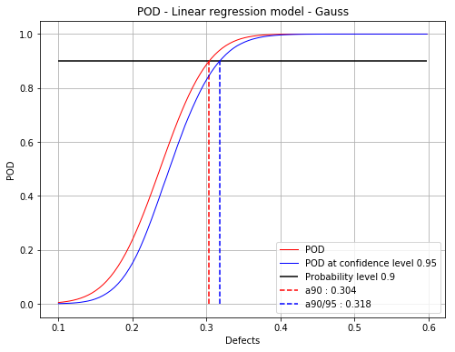
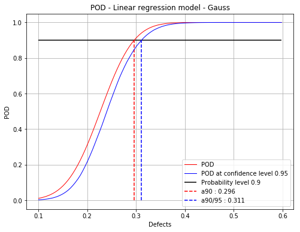

Linear model POD with censored data¶
[1]:
# import relevant module
import openturns as ot
import otpod
# enable display figure in notebook
try:
%matplotlib inline
except:
pass
/calcul/home/dumas/anaconda/lib/python3.6/site-packages/sklearn/ensemble/weight_boosting.py:29: DeprecationWarning: numpy.core.umath_tests is an internal NumPy module and should not be imported. It will be removed in a future NumPy release.
from numpy.core.umath_tests import inner1d
Generate data¶
[2]:
N = 100
ot.RandomGenerator.SetSeed(123456)
defectDist = ot.Uniform(0.1, 0.6)
# normal epsilon distribution
epsilon = ot.Normal(0, 1.9)
defects = defectDist.getSample(N)
signalsInvBoxCox = defects * 43. + epsilon.getSample(N) + 2.5
# Inverse Box Cox transformation
invBoxCox = ot.InverseBoxCoxTransform(0.3)
signals = invBoxCox(signalsInvBoxCox)
Build POD using previous linear analysis¶
[3]:
noiseThres = 60.
saturationThres = 1700.
# run the analysis with Gaussian hypothesis of the residuals (default case)
analysis = otpod.UnivariateLinearModelAnalysis(defects, signals, noiseThres,
saturationThres, boxCox=True)
[4]:
# signal detection threshold
detection = 200.
# Use the analysis to build the POD with Gaussian hypothesis
# keyword arguments must be given
PODGauss = otpod.UnivariateLinearModelPOD(analysis=analysis, detection=detection)
PODGauss.run()
Build POD with Gaussian hypothesis¶
[5]:
# The previous POD is equivalent to the following POD
PODGauss = otpod.UnivariateLinearModelPOD(defects, signals, detection,
noiseThres, saturationThres,
resDistFact=ot.NormalFactory(),
boxCox=True)
PODGauss.run()
Get the R2 value of the regression¶
[6]:
print('R2 : {:0.3f}'.format(PODGauss.getR2()))
R2 : 0.861
Compute detection size¶
[7]:
# Detection size at probability level 0.9
# and confidence level 0.95
print(PODGauss.computeDetectionSize(0.9, 0.95))
[a90 : 0.30373, a90/95 : 0.317848]
get POD Function¶
[8]:
# get the POD model
PODmodel = PODGauss.getPODModel()
# get the POD model at the given confidence level
PODmodelCl95 = PODGauss.getPODCLModel(0.95)
# compute the probability of detection for a given defect value
print('POD : {:0.3f}'.format(PODmodel([0.3])[0]))
print('POD at level 0.95 : {:0.3f}'.format(PODmodelCl95([0.3])[0]))
POD : 0.887
POD at level 0.95 : 0.830
Show POD graph¶
Mean POD and POD at confidence level with the detection size for a given probability level¶
[9]:
fig, ax = PODGauss.drawPOD(probabilityLevel=0.9, confidenceLevel=0.95,
name='figure/PODGaussCensored.png')
# The figure is saved in PODGauss.png
fig.show()
/calcul/home/dumas/anaconda/lib/python3.6/site-packages/matplotlib/figure.py:459: UserWarning: matplotlib is currently using a non-GUI backend, so cannot show the figure
"matplotlib is currently using a non-GUI backend, "

Build POD only with the filtered data¶
A static method is used to get the defects and signals only in the uncensored area.
[10]:
print(otpod.DataHandling.filterCensoredData.__doc__)
Sort inputSample and signals with respect to the censore thresholds.
Parameters
----------
inputSample : 2-d sequence of float
Vector of the input sample.
signals : 2-d sequence of float
Vector of the signals, of dimension 1.
noiseThres : float
Value for low censored data. Default is None.
saturationThres : float
Value for high censored data. Default is None
Returns
-------
inputSampleUnc : 2-d sequence of float
Vector of the input sample in the uncensored area.
inputSampleNoise : 2-d sequence of float
Vector of the input sample in the noisy area.
inputSampleSat : 2-d sequence of float
Vector of the input sample in the saturation area.
signalsUnc : 2-d sequence of float
Vector of the signals in the uncensored area.
Notes
-----
The data are sorted in three different vectors whether they belong to
the noisy area, the uncensored area or the saturation area.
[11]:
result = otpod.DataHandling.filterCensoredData(defects, signals,
noiseThres, saturationThres)
defectsFiltered = result[0]
signalsFiltered = result[3]
[12]:
PODfilteredData = otpod.UnivariateLinearModelPOD(defectsFiltered, signalsFiltered,
detection,
resDistFact=ot.NormalFactory(),
boxCox=True)
PODfilteredData.run()
[13]:
# Detection size at probability level 0.9
# and confidence level 0.95
print(PODfilteredData.computeDetectionSize(0.9, 0.95))
[a90 : 0.295976, a90/95 : 0.310948]
[14]:
fig, ax = PODfilteredData.drawPOD(probabilityLevel=0.9, confidenceLevel=0.95,
name='figure/PODGaussFiltered.png')
# The figure is saved in PODGauss.png
fig.show()
/calcul/home/dumas/anaconda/lib/python3.6/site-packages/matplotlib/figure.py:459: UserWarning: matplotlib is currently using a non-GUI backend, so cannot show the figure
"matplotlib is currently using a non-GUI backend, "

[ ]: